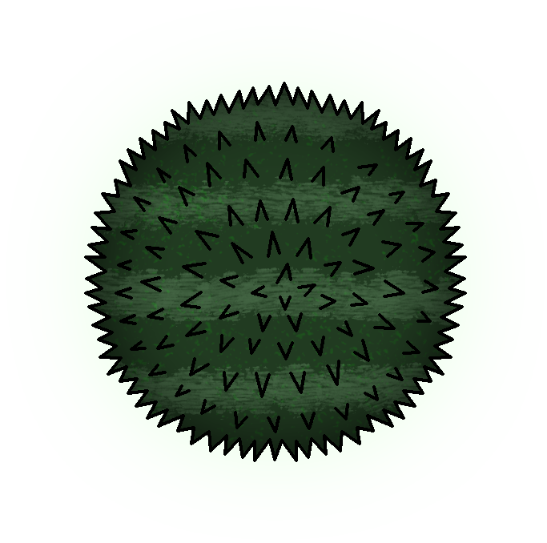
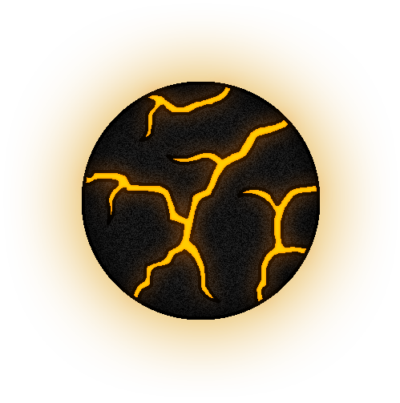
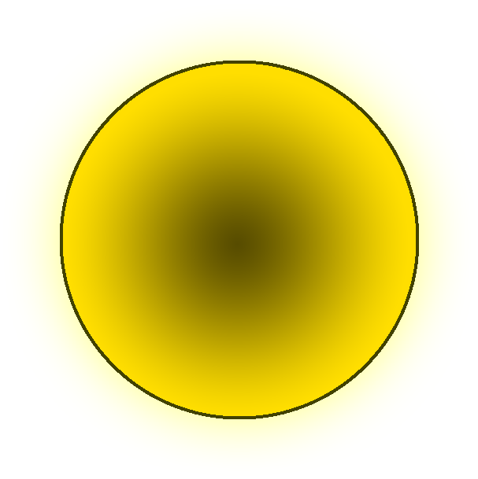
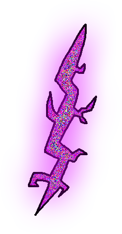
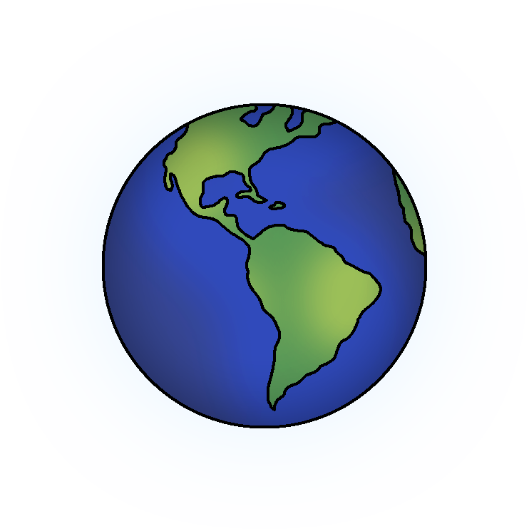
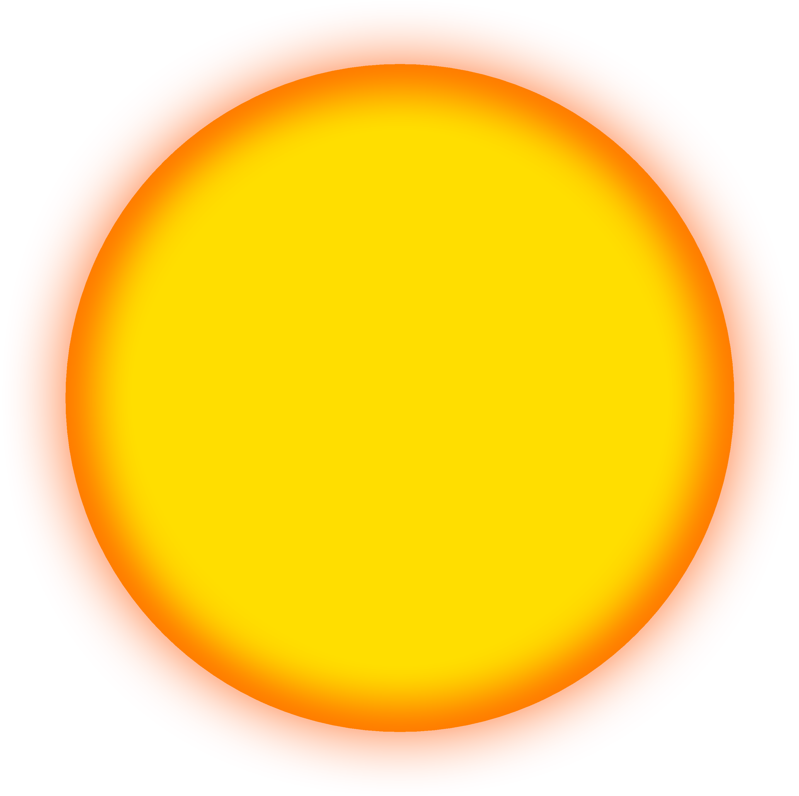
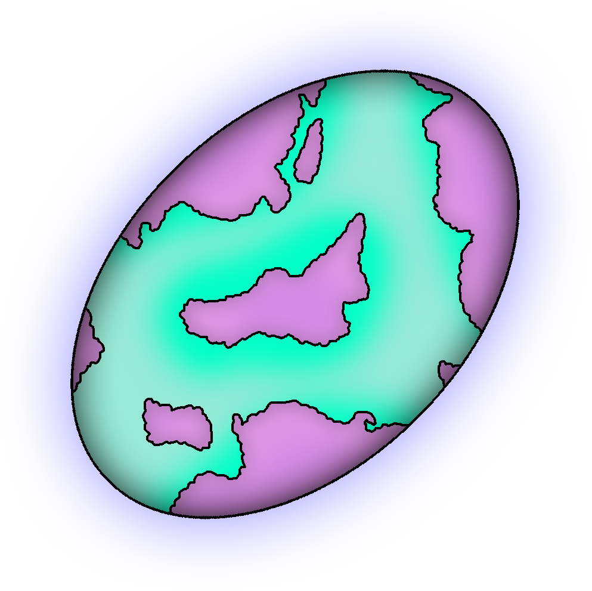
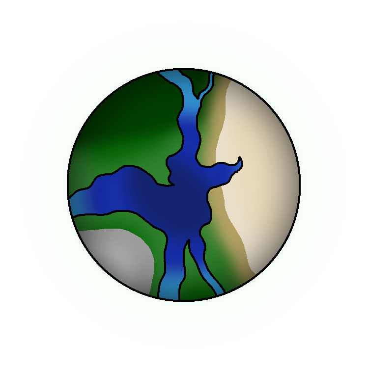
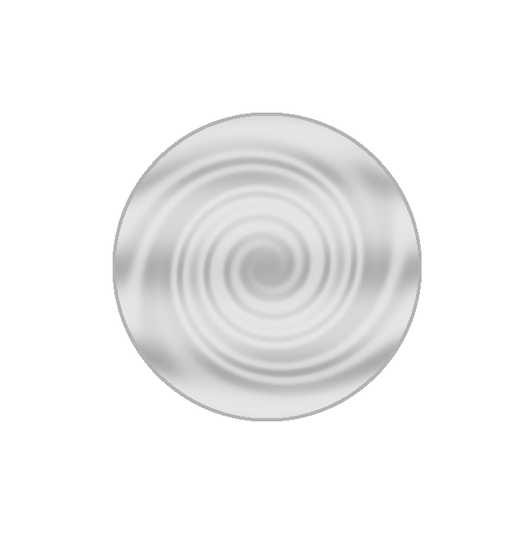
x
TECHNITE
Technite é um planeta rochoso e montanhoso, com uma gravidade similar à da Terra e temperaturas levemente baixas. O planeta é coberto por um gás esverdeado, inodoro e prejudicial à vida vegetal, além de ser inabitável para qualquer tipo de animal, por não possuir água e matéria orgânica. Seus únicos habitantes são os Tuküpans, criaturas alienígenas com uma tecnologia extremamente avançada. Graças a seus robôs e suas tecnologias de economia de recursos, através da alteração de escala, os Tuküpans conseguem sobreviver em Technite. Dilan, o mestre dos Tuküpans, enviava robôs de extração de recursos para outros planetas, para poder sustentar sua espécie. A maior parte era retirada da Terra e, por isso, depois que a mesma foi destruída, os Tuküpans se tornaram um alvo provável para a extinção. Dilan enviou TCW-1556 junto aos astronautas russos de Roscosmos, para retornar com água para abastecer sua cidade, porém, aguarda até hoje.
Eduardo Cometas passou por esse planeta em busca do fragmento de uma gema que pertencia ao núcleo do Planeta Terra. Sua arma não era forte o suficiente para deter os Tuküpans, porém, aparentemente, sua arma foi melhorada misteriosamente e foi capaz de matar os guerreiros Tuküpan e seu Mestre, Jito, que, posteriormente, teve seu cargo adquirido por Dilan. Eduardo coletou o fragmento da Gema e foi em busca de outro fragmento em outro planeta. Muito tempo depois, sua nave foi encontrada destruída perto de Technite, com algumas mariposas coloridas voando e se teleportando dentro dela.
SERRA
Serra é um planeta composto por rochas magmáticas e possui uma gravidade extremamente forte. Humanos despreparados podem facilmente ser esmagados por seu próprio peso nesse planeta. O planeta é repleto de ravinas e oceanos de lava. O planeta é extremamente resistente, tendo sua órbita passando por dentro do Sol e o atravessando. Apesar de parecer um planeta totalmente inabitável, existem seres vivos chamados de Serras, que bebem da lava do planeta e se alimentam de recursos minerais. Suas peles são feitas do metal que comem, e aqueles que ficam muito tempo sem se alimentar acabam enferrujando até a morte. As Serras costumam ficar escondidas em cavernas e ravinas durante a Assolação (período em que o Planeta Serra está mergulhado, totalmente ou parcialmente, no Sol). O planeta também é lar de criaturas incorpóreas, chamadas de Fogos. Os Fogos são uma espécie criada artificialmente por uma Serra autointitulada de "Geometry", e eles se alimentam de oxigênio. Por causa de complicações pessoais com Geometry, os Fogos aprisionaram seu pai em uma dimensão inescapável.
Eduardo Cometas passou por esse planeta em busca do fragmento de uma gema que pertencia ao núcleo do Planeta Terra. Vocês não sabem muito sobre o que houve nesse planeta durante sua chegada, mas é possível assumir que Serras foram mortas. Aparentemente, Geometry foi morto por Eduardo Cometas, e os Fogos foram aprisionados. Posteriormente, o Fogo ciano conseguiu escapar de alguma forma e foi em busca dos astronautas russos de Roscosmos, para serem aprisionados no lugar de seus irmãos. De alguma forma, esse Fogo sabia de muita coisa, como, por exemplo, que Eduardo havia desaparecido e que os astronautas estavam à sua procura, tornando sua mentira difícil de se decifrar. No final, apesar de terem ido para a Dimensão do Fogo, os astronautas fugiram por uma Fenda Temporal.
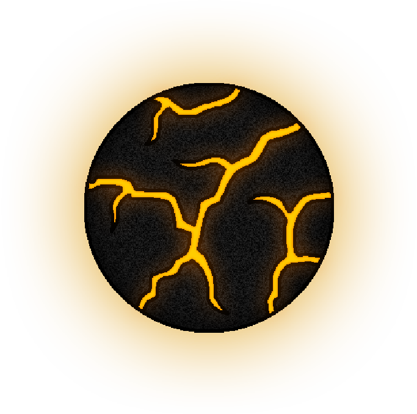
CORRUPÇÃO TEMPORAL
Uma dimensão vazia e distorcida, onde vozes de outros universos ecoam em sua mente, te enlouquecendo a cada segundo que se passa. A Corrupção Temporal substitui tudo aquilo que é matéria pelo vazio, consumindo, com maior facilidade, aquilo que não é vivo ou que tenha menor capacidade racional (seres não sapientes). De acordo com Eta, a Corrupção Temporal ameaça consumir todo o multiverso, e é algo inevitável.
Clique na Fenda para acessar a Dimensão
DIMENSÃO DO FOGO
Uma dimensão dourada, de difícil acesso. Essa dimensão foi usada na criação dos Fogos, criaturas fantásticas e poderosas, feitas por Geometry. Para acessá-la, é preciso ter contato com uma esfera amarela, porém, é preciso ter cuidado, porque, ao entrar, é praticamente impossível de sair. Ao se rebelarem contra seu criador, os Fogos usaram esta dimensão para aprisionar Geometry. Durante a visita de Eduardo Cometas no planeta, os Fogos foram selados em outras dimensões esféricas como essa, e as esferas que dão acesso a essas dimensões foram seladas na Dimensão do Fogo. Geometry foi libertado, porém, morto logo em seguida.
Clique na Esfera para acessar a Dimensão
DIMENSÃO PRISÃO
Uma dimensão bem similar à Dimensão do Fogo, porém, extremamente perigosa. Caso alguém entre nessa esfera, seja ela azul, ciano, rosa ou roxo, a esfera se tornará acinzentada, representando que a pessoa foi selada na dimensão. A única forma de escapar da dimensão é caso uma ou mais pessoas entrem na dimensão, assim liberando o uso da esfera para quem está dentro. Porém, assim que as pessoas saem e resta uma pessoa na dimensão, ela se sela novamente e a pessoa é aprisionada.
O Fogo ciano, que havia sido aprisionado por Eduardo Cometas em uma dessas esferas, foi liberto de forma misteriosa, e logo foi em busca de pessoas para entrarem nas dimensões de seus irmãos para tomarem seus lugares no selamento eterno. O Fogo conseguiu selar os astronautas russos de Roscosmos na Dimensão do Fogo, usada para selar Geometry anos atrás. Porém, sua tentativa de obrigá-los a entrarem nas dimensões prisão de seus irmãos foi arruinada pela Corrupção Temporal. Uma fenda temporal surgiu, e todos fugiram por ela, deixando o Fogo ciano triste e sem esperanças.
TERRA
A Terra é o segundo planeta com maior biodiversidade do Sistema Solar, tendo milhões de espécies de seres vivos diferentes vivendo em si. Seu clima, posição comparada ao Sol e grande disponibilidade de água fizeram do Planeta Terra o lugar perfeito para a vida proliferar. Existe somente uma espécie de ser vivo racional na Terra, sendo ela o Ser Humano. O Planeta Terra foi totalmente modificado pelos Seres Humanos, que, de forma intrusiva e exploratória, destruíram e manipularam a vida de seu próprio planeta para o benefício de sua espécie sobre as outras. Quando a gema do núcleo do planeta desapareceu, toda a vegetação começou a morrer, e pequenos animais começaram a adoecer. Eduardo Cometas foi o único com coragem suficiente para explorar planetas desconhecidos e possivelmente hostis, em busca de salvar a Terra. Ao retornar com a Gema, Eduardo Cometas se tornou muito mais do que um herói. Para alguns, ele se tornou uma espécie de divindade, um messias. Por essa razão, seu sumiço abalou o Planeta mais do que deveria, criando um clima quase que apocalíptico no mesmo.
Nesse período de trevas, Bendy fez um pacto com um humano e começou a organizar uma enorme rebelião contra o deus tirano Hratunax. 90% da vida da galáxia foi para o Planeta Terra, onde todos guerrearam contra Hratunax e perderam. Todos foram mortos, e o Planeta Terra foi dizimado, não deixando nenhum rastro de que algum dia sequer existiu.
SOL
O Sol é uma enorme estrela, localizada no centro do Sistema Solar. Sua massa é tão grande que permite aos planetas ao seu redor orbitarem à sua volta, realizando translações. A radiação liberada pelo Sol está espalhada pelo Sistema Solar inteiro, tornando o espaço um lugar bem mais perigoso do que já é. Graças a seus campos magnéticos, a maioria dos planetas não são afetados totalmente por essa radiação, formando cinturões de partículas radioativas ao redor de si, em formato de ∞ (infinito). É previsto que, daqui a algumas centenas de milhões de anos, devido ao esgotamento de hidrogênio em seu núcleo, o Sol irá se expandir e tornar impossível a vida na maioria dos planetas.
ESTELLAR
Estellar é um lindo planeta, com águas luminosas, céus limpos, vegetação de coloração rosa/ciana, bolhas de água e partículas brilhantes. Devido à luz das águas, as planícies de Estellar não costumam ser muito escuras, somente as florestas. Apesar de inicialmente parecer um planeta deserto, existe muita vida nele, porém, não é visível ao olho nu. O ar é repleto de microrganismos não nocivos, que conseguem crescer e chegar a tamanhos surpreendentes, podendo alcançar até 1 centímetro de altura e largura. Esses microrganismos costumam nascer nas águas e, ao se desenvolverem um pouco mais, vão para o ar, onde podem se desenvolver mais ainda e servirem de alimento aos animais das planícies. As Estelares são a única espécie racional de Estellar e vivem nas planícies. Todas da espécie são fêmeas e dizem que nasceram de "estrelas cadentes". Elas emitem uma luz natural de seus corpos e costumam usar roupas leves, para ser mais fácil de flutuar e voar por aí, além de também aumentar o contato com o ar, visto que elas se alimentam absorvendo, pela sua pele, os microrganismos presentes no ar e na água. Apesar de serem racionais, as Estelares são extremamente bondosas e raramente alguma Estelar tem alguma intenção ruim. Algumas Estelares já conseguiram sair de Estellar, porém, nunca voltaram depois e, por esse motivo, a Anciã não recomenda a saída do planeta. Nas planícies também vivem as Estrelinhas, que são como estrelas-do-mar flutuantes, com um rostinho fofinho. Elas se alimentam da mesma forma que as Estelares. Nas florestas vivem animais perigosos, que se alimentam da carne uns dos outros. O maior predador das florestas é o Estrelador, uma espécie de urso bestial rosa.
Uma criatura misteriosa, intitulada de Feto Cósmico, aterrissou em Estellar e se tornou uma divindade para as Estelares. Meses depois, outra criatura misteriosa surgiu no planeta, um tipo de monstro líquido, cuja presença derretia qualquer matéria ao seu redor. Uma pequena vila de Estelares foi dizimada por esse monstro, porém, ele foi atraído pelos astronautas russos de Roscosmos e o Feto Cósmico para longe da vila, onde ele desapareceu e nunca mais foi visto.
GAIA
Gaia é um planeta extremamente misterioso para os habitantes da Terra, por ser um planeta que surgiu de repente e ser bem distante, comparado aos outros. Apesar de não saberem muito sobre o planeta, é um fato que o planeta é habitável e consegue sustentar diversos tipos de vida. Acredita-se que existe uma enorme variedade de seres vivos em Gaia, até mais do que na Terra, a tornando o planeta com a maior diversidade de vida do Sistema Solar.
Vocês descobriram, através do mestre dos Tuküpans, Dilan, que o planeta foi criado por Hratunax, o deus responsável pela destruição da Terra.
NIMBUS
Nimbus é um planeta gasoso, composto por um ar úmido e nublado. Como seu nome sugere, o planeta inteiro é coberto por nuvens e, por isso, quanto mais perto do centro de gravidade do planeta, mais escuro será. O planeta é inabitável, porém, graças a dois monjes, o planeta passou a ser habitado por uma espécie de criaturas mágicas, chamadas de Nuvens, que conseguem concentrar uma enorme carga de energia elétrica mágica em si, que, ao ser liberada, pode fazê-las se teleportar ou até mesmo atacar. As Nuvens se alimentam de água e, para ajudá-las, os monjes também criaram criaturas mágicas com muita água concentrada em si: os Úmidos. Os Úmidos se alimentam da umidade do ar e costumam acumular mais água do que precisam para sua sobrevivência, para, no futuro, poder usar o excesso na formação de seus descendentes.
Eduardo Cometas passou por este planeta e destruiu várias das Nuvens, que o viram como uma ameaça. Vendo isso, os monjes Porco e Pássaro tentaram impedi-lo e também morreram. Graças a uma magia usada no último segundo de suas vidas, os monjes fundiram seus corpos, se tornando um único ser, uma nova criatura mágica: o Porcássaro. Porém, a arma de Eduardo Cometas, que havia sido misteriosamente melhorada em Technite, era muito poderosa e conseguiu eliminar Porcássaro. Os descendentes de Porcássaro agora são encarregados de proteger as Nuvens no lugar de seus antecessores. Quando os astronautas russos de Roscosmos chegaram a Nimbus, os monjes os pararam e simpatizaram com a verdadeira razão para eles estarem ali. Monge Porco passou uma fração do conhecimento escrito no Tomo dos Monjes para Vladimir, o ensinando a como invocar um Úmido. Após isso, os astronautas abandonaram o planeta.
UNIVERSO A135
O Universo A135 é um universo bem similar ao Universo A131 (Universo Principal de Favela SMP). Seus eventos são praticamente idênticos, tendo poucas coisas que os diferem. Esse é o universo de onde originaram-se os astronautas russos de Roscosmos. Ele foi abandonado após os astronautas entrarem numa Fenda Temporal e serem enviados para um outro universo.
Clique na Fenda para acessar o Universo
UNIVERSO A131
O Universo A131 é o universo principal de Favela SMP, onde a maioria dos eventos principais aconteceram. Antes da Corrupção Temporal, ele era bem similar ao Universo A135, de onde os astronautas russos de Roscosmos originaram, porém, após ela ter cessado, o Universo A131 se tornou o premiado. Todos os universos foram mesclados ao Universo A131, assim trazendo diversos seres de lugares e tempos diferentes em um só lugar. Isso mudou totalmente o rumo do universo, tornando o futuro ainda mais imprevisível e caótico para todos.
Clique na Fenda para acessar o Universo
ETA-SUBWAY
ETA-Subway é um enorme metrô que consegue atravessar o Vazio Corrompido e utiliza essa habilidade para resgatar aqueles que nele se perdem. Eta acredita que ETA-Subway seja sua mãe, que, aparentemente, era tão gorda que rolou para dentro de uma Fenda Temporal e se perdeu dele.
Quando provocado, ETA-Subway atacou um dos astronautas russos de Roscosmos, Vladimir, o arremessando pelo vidro em direção ao Vazio Corrompido. Mais tarde, após a Corrupção Temporal ter sido encerrada pelos esforços coletivos de dois grupos de pessoas, ETA-Subway surgiu no Universo A131, revelando uma aparência monstruosa. O interior do metrô ficou coberto de raízes de carne, com uma enorme parede feita do mesmo material impedindo a passagem para o resto dos vagões. Na parede, existia um enorme olho com pupilas distorcidas, observando todo o interior de ETA-Subway. Diversas patas carnosas se libertaram do metrô, junto a duas grandes mandíbulas. Esse monstro tentou destruir o balão-orfanato de Beatriz, porém, graças à ajuda dos astronautas russos de Roscosmos, a aberração fugiu, deixando somente a carcaça do metrô e uma mensagem: "EU QUERO VINGANÇA".
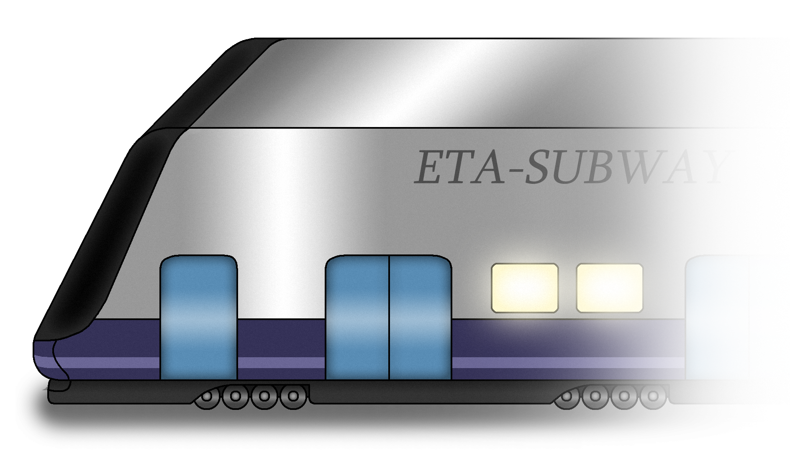
BALÃO
Esse balão extremamente chamativo vaga pelo espaço, resgatando crianças órfãs que perderam seus pais. Beatriz, a criadora desse projeto, é a figura materna de todos aqueles que ela resgata, dando a seus filhos a vida feliz que eles merecem. Porém, existem aqueles que querem ferir suas crianças, e, pra impedir isso, Beatriz reenforçou ao máximo seu balão, o tornando extremamente resistente.
Alguns dos astronautas russos de Roscosmos estavam morrendo no vácuo do espaço, quando foram resgatados por um gato e porco mágicos, que os guiaram até o balão. Apesar disso, Beatriz revelou aos astronautas que o gato e o porco não possuem boas intenções e buscam ferir os órfãos. Por algum motivo, ETA-Subway surgiu, posteriormente, tentando destruir o balão e eliminar as crianças nele presentes. Graças a Victoria, uma das tripulantes de Roscosmos, o metrô monstruoso foi detido e o balão foi salvo.